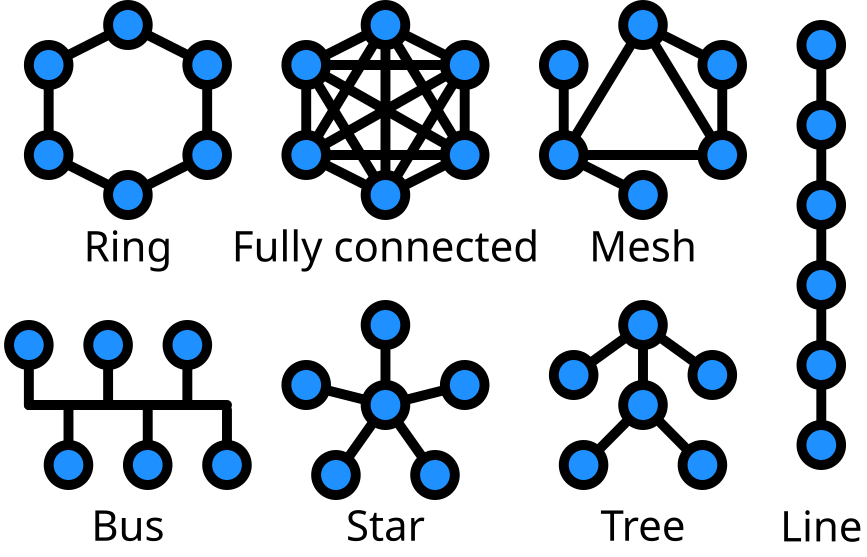
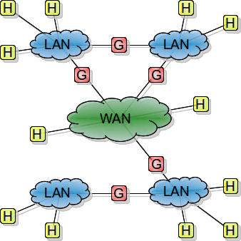
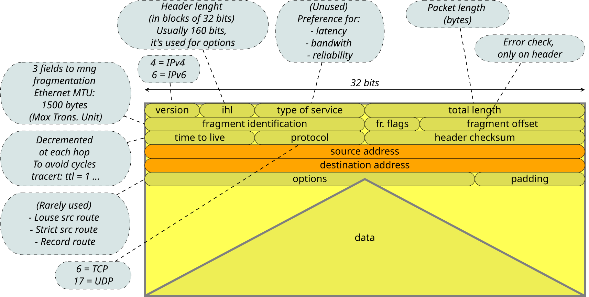
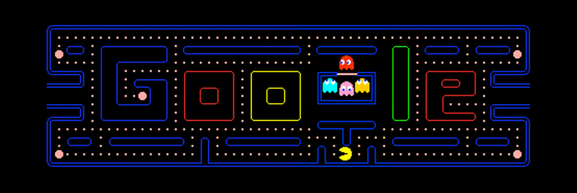

- Vantaggi
- Condivisione di dati e risorse
- Convenienza e crescita graduale
- Classificazione
- Dimensione
- Throughput
- Mezzo fisico
- Collegamento dati
Introduzione all'informatica
Michele Tomaiuolo
Ingegneria dell'Informazione, UniPR
Reti di calcolatori
Dimensione e capacità
- Dimensione: tipico criterio di classificazione delle reti
- LAN: Local Area Network (ufficio o edificio)
- MAN: Metropolitan Area Network (campus o città)
- WAN: Wide Area Network (rete geografica)
- Throughput (“capacità” o “larghezza di banda”)
- Quantità di informazione trasportata nell’unità di tempo (bit/s)
- Misura principale delle prestazioni di una rete
- Ma anche latenza, jitter, probabilità d'errore...
Collegamento

- Topologia
- Stella, bus, anello, albero, mesh
- Mezzo fisico
- Rame, decine di Mbit/s
- Fibra ottica, Tbit/s
- Senza cavo, decine di Mbit/s
- Via satellite, broadcast 1Gbit/s, condivisione, latenza
- Data link, collegamento dati
- Marcatura dei frame dati, gestione di flusso, collisioni, errori
Internet

- La “rete delle reti”: interconnessione tra svariate reti di calcolatori, di dimensione planetaria
- Assegna un indirizzo univoco (indirizzo IP) ai calcolatori, per l'individuazione globale o locale
- Si basa su protocolli di comunicazione comuni (stack TCP/IP) per lo scambio di pacchetti di dati tra calcolatori
- Commutazione di pacchetto anziché di circuito ☎
- Per ogni pacchetto viene scelto un percorso
Indirizzo IPv4
- Composto da una sequenza di quattro numeri compresi tra 0 e 255 (4 byte)
160.78.28.83– Indirizzo pubblico (UniPR)192.168.1.1– Indirizzo privato
(10.*.*.* – 172.16-31.*.* – 192.168.*.*)127.0.0.1– Loopback
- Spazio indirizzi: soli 32 bit → uso indirizzi privati
- NAT (Network Address Translator): intera rete locale con un unico indirizzo pubblico
- Proxy: intermediario per una certa app., di solito web
Domain Name System
- Il DNS: nomi simbolici (domini) → indirizzi IP
www.repubblica.it, www.google.com, www.ce.unipr.it
- Top level domain (parte finale nome) e indirizzi assegnati da ICANN/IANA
- Indicante il tipo di organizzazione:
com, edu, gov, int, net, mil, org, info, biz, name - Indicante la nazione:
it, uk, fr, us, eu, …
- Indicante il tipo di organizzazione:
Pacchetto IPv4

Protocollo IPv6
- Indirizzi a 128 bit
- Numero di indirizzi IPv6 / m2 sulla Terra (6,66×1023) > Numero di Avogadro!
- Pacchetto con header molto semplificato
- 64 bit in tutto (senza contare gli indirizzi...)
- Poi header opzionali
- Possibilità di stabilire dei flussi
- Predefinizione di un percorso; via di mezzo tra commutazione di circuito e di pacchetto
Transmission Control Protocol
- IP: senza connessione e inaffidabile
- Ciascun pacchetto viaggia in maniera indipendente
- Senza garanzia di consegna (best effort)
- UDP (User Datagram Protocol): inaffidabile
- Datagrammi dentro pacchetti IP
- TCP: orientato alla connessione e affidabile
- Controllata la correttezza dei dati
- Segmenti numerati e riordinati
- Re-invio segmenti persi, eliminazioni duplicati
- Controllo di congestione del traffico
Modello OSI/ISO
| Liv. | Definizione | Descrizione |
|---|---|---|
| 7 | Applicazione | Applicazioni (Web, eMail, Skype...) |
| 6 | Presentazione | Standard formato dati (HTML, XML…) |
| 5 | Sessione | Protocolli dei servizi: FTP, HTTP, SMTP, RPC, TELNET... |
| 4 | Trasporto | Protocolli TCP e UDP |
| 3 | Rete | Protocollo IP |
| 2 | Colleg. dati | Trasmissione dati dipendente da livello fisico |
| 1 | Fisico | Hardware |
World Wide Web
World Wide Web
- Sistema per condivisione di informazioni ipertestuali
- Uno dei modi più diffusi di utilizzare la rete Internet
- Permette agli utenti di Internet di pubblicare e accedere a documenti HTML, raggiungibili ad una certa URL via HTTP
- Si basa su due programmi: web server e web client (browser)
- 1990: Tim Berners-Lee @ CERN, x doc scientifici
- 1993: Marc Andreessen @ Mosaic/Netscape, primo browser grafico
Form HTML
- Sezione di documento tra tag
form, contenente:- Testo normale e markup
- Elementi speciali, o controlli, che l'utente può “completare”
- Il tag
formprevede due attributiaction: url a cui inviare i dati (elaborazione remota su web server)method: metodo HTTP da usare nell'invio dei dati del form
(getopost, in accordo con server)
<form action="http://xyz.com/script.cgi" method="post">
...
</form>
Tag per i controlli
- Tag principali per controlli interattivi
input: immissione di testo, pulsanti selezionabili, bottoniselect: menu a discesa e box di selezionetextarea: area di testo, su più righe
- Ogni controllo di input in un form ha:
- Un nome, definito dall’attributo
name - Un valore, che l’utente imposta (immettendo testo o cliccando col mouse)
- Un nome, definito dall’attributo
- Dati inviati come insieme di coppie nome/valore
Linguaggio PHP
- Php: Hypertext Preprocessor
(in origine: Personal Home Page) - Linguaggio scripting lato server, come ASP e JSP
- Frammenti di codice inseriti in pagine HTML
- File PHP eseguiti sul server e poi restituiti al browser come semplice HTML
- Supporta molti DB, spesso si usa MySQL (LAMP)
- Open source
- http://php.net/manual/it/
- http://www.apachefriends.org/it/xampp.html
Linguaggio JavaScript

- Netscape: interattività ad HTML
- Reagire ad eventi
- Controllare dati
- Modificare elementi HTML
- Completamente diverso da Java
- Linguaggio interpretato (no compilazione, o jit)
- Tipizzazione dinamica (dati di tipo diverso in una var.)
- Object-based (non ci sono classi)
- Scripting in applicazioni diverse (es. QML)
- https://developer.mozilla.org/en/JavaScript
- http://www.ecmascript.org/
HyperText Transfer Protocol
- Protocollo di livello 5, sessione
- Sistemi informativi distribuiti, collaborativi, ipertestuali
- Usato nel World-Wide Web fin dal 1990
- Semplice: meccanismo richiesta/risposta
- Flessibile: supporto a vari tipi di dati, estendibile
- Usa TCP/IP, porta 80... ma richiede solo un livello di trasporto affidabile
- Senza connessione: una richiesta/risposta per ogni connessione (meccanismo base, fino a v1.0)
- Senza stato: lo stato non è conservato tra connessioni diverse (cookie per webapp, ext. v1.0)
Metodo GET
- Recupera l'informazione (in forma di entità) identificata dall’url della richiesta
- Se url = processo di produzione dati...
- Dati restituiti come corpo della risposta
- Semantica modificata in
GETcondizionale se tra gli header:if-modified-since, if-unmodified-since, …- Evitare spreco di risorse di rete
Metodo POST
- Copre diverse funzioni generali
- Annotazione di risorse esistenti
- Invio di messaggi a bulletin board, newsgroup, mailing list, o gruppi di articoli simili
- Aggiunta di dati ad un database
- Invio dati (es. form) a processo che li gestisca
- Url = processo che gestirà l’entità acclusa
- Applicaz. server, o gateway per altri protocolli
- Entità separata che accetta annotazioni
Esempio di richiesta
POST /beta.jsp HTTP/1.1
Referer: http://www.alpha.com/alpha.jsp
Connection: Keep-Alive
User-Agent: Mozilla/4.61
Host: www.alpha.com:80
Cookie: name=value
Accept: image/gif, image/jpeg, */*
Accept-Language: en
[blank line here]
selected-item=1234&action=show+details
GET /beta.jsp?selected-item=1234&action=show+details HTTP/1.1
Referer: http://www.alpha.com/alpha.jsp
[...]
If-modified-since: Mon, 10 Jul 2000 22:55:23 GMT
[blank line here]
Esempio di risposta
HTTP/1.1 200 OK
Date: Fri, 12 Nov 2001 11:46:53 GMT
Server: Apache/1.3.3 (Unix)
Last-Modified: Mon, 12 Jul 2000 22:55:23 GMT
Accept-Ranges: bytes
Content-Length: 234
Content-Type: text/html
[blank line here]
<html>
<head><title>Beta page</title></head>
<body>
<h1>Beta page</h1>...
Codici di stato
- 1xx – Informational (ok, elaborazione in corso)
- 2xx – Success (richiesta ricevuta e accettata)
- 3xx – Redirection (necessarie azioni ulteriori)
- 301: Perm.; 302: Temp.; 304: Non modificata (→ cache)
- 4xx – Client Error
- 400: Richiesta scorretta; 401: Non autorizzato; 404: Non trovato
- 5xx – Server Error (ma richiesta valida)
Cookie
- Meccanismo generale per memorizzare e recuperare informazioni sul lato client di una connessione HTTP
- Server: quando invia risposta...
- Può inviare anche info di stato
- Da memorizzare sul client
- Specificato il range di url per cui lo stato è valido
- Può essere specificata una scadenza
- Client: in seguito, per ogni richiesta quel range...
- Ritrasmessa anche informazione di stato
<Domande?>
Michele Tomaiuolo
Palazzina 1, int. 5708
Ingegneria dell'Informazione, UniPR
sowide.unipr.it/tomamic